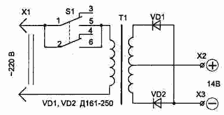

ИЗДАНИЕ 51
1. Несимметричный износ автошин, обусловленный неправильной регулировкой колес, можно обнаружить на ощупь, проведя ладонью по протектору. Если ощущение «против шерсти» возникает при движении руки внутрь, к корпусу машины - это расходимость колес, при движении руки наружу - сходимость.
2. Автошина не прикипит к ободу, если заранее натереть мылом соприкасающиеся поверхности.
3. Как контролировать уровень электролита в аккумуляторе: на пластиковой панели монтируют две лампочки от карманного фонаря и два проволочных щупа. Пробник опускают в аккумуляторную банку, зажим присоединяют к клемме "+" или "-". Если горит лишь одна лампочка, банку доливают до тех пор, пока не загорится вторая.
4. Небольшой пробой беговой дорожки автошины можно устранить. Чтобы стальные нити корда не порвали камеру, пропустите в отверстие ножку резинового «грибка» из автоаптечки. Под «грибок» подложите жестяной кружок с отверстием, края которого подогните.
5. При незначительном проколе автокамеры, вырежьте из резины кружок, надрежьте его по ребру, чтобы получилась кольцевая прорезь, не доходящая до центра. Пропустите половину такого клапана через прокол внутрь камеры.
6. Отделить борт проколовшейся шины от диска - непростая задача. В качестве шиноотделителя можно использовать домкрат и петлю из крепкой капроновой веревки (например, буксировочный трос). Веревку пропускают через отверстие в диске и завязывают петлей, домкрат ставят на борт покрышки и упирают в петлю. Работая им на подъем, отделяют покрышку от диска. Чтобы не завязывать петлю каждый раз, ее можно сделать двойной и возить в машине как постоянное приспособление.
7. Забортовывая покрышку, смажьте ее борта мылом и она войдет почти без усилий.
8. Днище кузова не будет ржаветь в следствии затекания под коврик воды, если под них положить решетки (например, от кухонных раковин). Благодаря вентиляции днище всегда будет сухим.
9. Шплинтом может послужить обычная заколка-«невидимка» для волос, если предварительно нагреть ее на газовой горелке.
10. Несколько капель шампуня, добавленного в бачок омывателя стекол, значительно улучшит работу стеклоочистителя.
11. Свечу с пробитым изолятором можно отремонтировать, покрыв изолятор несколькими слоями силикатного клея и тщательно просушив.
12. Никелированные детали автомашины очищают от масляных пятен пеплом от сигарет, насыпанным на влажную фланелевую тряпочку.
13. Как оснастить насос манометром позволяющим следить за давлением в камере: для этого потребуется металлический брусок, отрезок шланга, два штуцера и сам манометр. В бруске, имеющим кольцевой зажим для крепления на корпусе насоса, выполняют три резьбовых отверстия, соединенных друг с другом. В одно из них устанавливают манометр, во второе - штуцер короткого шланга, соединенного с выходом насоса, в третьей - штуцер выходного шланга.
14. Чтобы вытащить застрявший автомобиль, в дополнение к тросику и монтировке, надо иметь обычную штыковую лопату и 30-ти сантиметровый отрезок трубы, свободно надевающийся на ее рукоятку. Вогнав в землю лопату в 2-3 метрах от автомобиля, вы надеваете на нее трубу, а затем, зацепив за буксировочный крюк трос, начинаете наматывать его на трубу с помощью монтировки, продетой в петлю троса. Автомобиль таким способом вытаскивается без помощи двигателя даже в одиночку.
15. При сильном лобовом или боковом ветре расход топлива может увеличиваться до 40%. В такой обстановке наиболее экономичная езда - на прямой передаче с минимальной скоростью.
ПУСКОВОЕ УСТРОЙСТВО

Применение пускового устройства будет особенно полезно автолюбителю, занимающемуся эксплуатацией автомобиля в зимнее время, так как оно продлевает срок службы аккумулятора, а также позволяет без проблем заводить холодный автомобиль зимой даже при не полностью заряженном аккумуляторе. Из опыта известно, что при минусовой температуре аккумулятор снижает свою отдачу на 25 ..40% А если он еще не полностью заряжен, то не сможет обеспечить требуемый для пуска двигателя начальный ток 200 А. Этот ток потребляет стартер в начальный момент раскрутки вала двигателя. Номинальный ток, потребляемый стартером, - около 80 А, но в момент пуска он будет значительно больше.
Простейшие расчеты показывают, что для того, чтобы пусковое устройство эффективно работало при подключении его параллельно с аккумулятором, оно должно обеспечивать ток не менее 100 А при напряжении 10...14 В. При этом мощность используемого сетевого трансформаторе Т1 (см. рис.) должна быть не менее 800 Вт. Как известно, номинальная рабочая мощность трансформатора зависит от площади сечения магнитопровода (железа) в месте расположения обмоток.
Сама схема пускового устройства довольно проста, но требует правильного изготовления сетевого трансформатора. Если для него использовать тороидальное железо от любого ЛАТРа, можно получить минимальные габариты и вес. Периметр сечения железа может быть от 230 до 280 мм (у разных типов автотрансформаторов он отличается).
Перед навивкой обмоток необходимо закруглить напильником острые края на гранях магнитопровода, после чего его обматывают лакотканью или стеклотканью.
Первичная обмотка трансформатора содержит примерно 260...290 витков провода ПЭВ-2 диаметром 1,5...2,0 мм (провод может быть любого типа с лаковой изоляцией). Намотку распределяем равномерно в три слоя, с межслойной изоляцией. После выполнения первичной обмотки, трансформатор необходимо включить в сеть и замерить ток холостого хода. Он должен составлять 200...280 мА. При этом будут оптимальные условия трансформации мощности во вторичную цепь. Если ток будет меньше - часть витков надо отмотать, если больше - домотать до получения указанной величины.
Следует учитывать, что зависимость между индуктивным сопротивлением, а значит и током в первичной обмотке, и числом витков является квадратичной - даже незначительное изменение числа витков будет приводить к существенному изменению тока первичной обмотки.
При работе трансформатора в режиме холостого хода не должно быть нагрева обмотки. Он свидетельствует о наличии межвитковых замыканий или же продавливании и замыкании части обмотки через магнитопровод. В этом случае намотку придется выполнять заново.
Вторичную обмотку наматывают изолированным многожильным медным проводом сечением не менее 6 мм2, например, типа ПВКВ, с резиновой изоляцией. Она содержит две обмотки по 15...18 витков, которые наматывают одновременно (двумя проводами), что позволяет легко получить их симметричность - одинаковые напряжения в обеих обмотках. Это напряжение должно быть в интервале 12... 13,8 В. при номинальном сетевом напряжении 220 В. Измерять напряжение во вторичной обмотке лучше на временно подключенном к клеммам Х2, ХЗ нагрузочном резисторе сопротивлением 5... 10 Ом.
Показанное на схеме соединение выпрямительных диодов позволяет использовать металлические элементы корпуса пускового устройства не только для крепления диодов, но и в качестве теплоотвода без диэлектрических прокладок (плюс диода соединен с крепежной гайкой).
Для подключения пускового устройства параллельно аккумулятору соединительные провода должны быть изолированными и многожильными (лучше медными) с сечением не менее 10 мм2 (не путать с диаметром). На концах провода после обслуживания припаивают соединительные наконечники.
Контакты включателя S1 должны быть рассчитаны на ток не менее 5 А, например типа ТЗ
Уникальные издания.